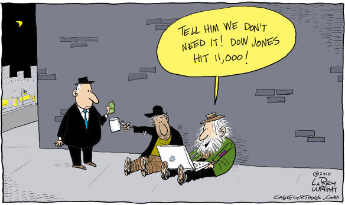

http://blog.capitalogix.com/public/2010/04/capitalogix-commentary-for-the-week-of-042610.html
There have been many changes to the Dow Jones over the years - hundreds, in fact, throughout the 122 years it has been existence. Let's explore some of the changes that have occured over time.

http://blog.capitalogix.com/public/2010/04/capitalogix-commentary-for-the-week-of-042610.html